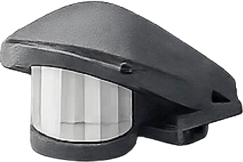

Matériau FDM · PA12-CF
Impression 3D en Nylon PA12 fibre de carbone (PA12-CF15)
Le PA12 chargé à 15 % de fibre de carbone : léger, très rigide, peu sensible à l'humidité. Le matériau des pièces d'ingénierie.
FDM · Dépôt de fil fonduRigide · Léger · Technique

Fiche express
PA12-CF en bref
Tenue thermique160 °C*
RigiditéTrès élevée
FinitionNoire mate
PoidsLéger
HumiditéFaible absorption
Le matériau
Qu'est-ce que le PA12-CF ?
Le PA12-CF15 est un polyamide 12 chargé à 15 % de fibres de carbone courtes. Selon le fabricant, il offre deux fois la résistance à la traction du PA12 et plus de deux fois sa rigidité*, avec une tenue jusqu'à 160 °C*.
Il absorbe peu l'humidité, ce qui lui assure des cotes stables dans le temps. Sa finition noire mate masque bien les strates et donne un aspect technique.
C'est notre matière de référence pour les pièces d'ingénierie légères : automobile et sport mécanique, drones, robotique, outillages et gabarits.
Pour / contre
Points forts & limites
Points forts
- 2× la résistance à la traction du PA12*
- Plus de 2× sa rigidité*
- Tenue jusqu'à 160 °C*
- Faible absorption d'humidité
- Finition noire mate technique
Limites
- Moins résistant aux chocs que le PA12-GF
- Abrasif : imprimé avec des buses adaptées
- Plus coûteux que les filaments standards
Usages
Applications du PA12-CF
Secteur
Automobile & sport mécanique
Supports, conduits, pièces de prototypes.
Secteur
Drones & robotique
Bras, châssis, supports moteurs.
Secteur
Outillage
Gabarits, montages, préhenseurs.
Secteur
Ingénierie
Pièces légères remplaçant parfois l'aluminium.
Caractéristiques
Données techniques
| Matrice | Polyamide 12 |
|---|---|
| Renfort | 15 % fibre de carbone |
| Tenue en température | 160 °C* (donnée fabricant) |
Valeurs indicatives (données fabricant ou ordres de grandeur de la famille de matériau). * À valider selon l'application finale. Fiches techniques complètes sur demande.
Conseils d'atelier
Bien concevoir sa pièce en PA12-CF
Conseils de conception
- Placer les efforts dans le plan des couches.
- Prévoir des inserts pour les fixations démontables.
- Nervures plutôt que parois épaisses.
Finitions & post-traitements
- Inserts thermiques
- Perçage, taraudage
- Ponçage léger


FAQ
Questions fréquentes sur le PA12-CF
Le PA12-CF peut-il remplacer une pièce en aluminium ?
Pour certaines pièces légères et peu chargées, oui. Nous vous conseillons selon les efforts et la température.
Pourquoi une buse spéciale ?
Les fibres de carbone sont abrasives : elles useraient une buse standard. Nos machines sont équipées en conséquence.
Autres matières FDM

PLA
Précis · Économique · Multicolore
Voir la fiche →
PETG
Solide · Durable · Résistant chimique
Voir la fiche →
ABS
Dur · Usinable · Tenue à la chaleur
Voir la fiche →
ASA
Résistant UV · Extérieur · Durable
Voir la fiche →
TPU
Souple · Élastique · Anti-abrasion
Voir la fiche →
PP
Léger · Souple · Résistant chimique
Voir la fiche →
PA12-GF
Stable · Robuste · Industriel
Voir la fiche →
PPS-CF
Haute température · Résistant chimique · Rigide
Voir la fiche →On nous trouve aussi pour
Impression 3D fibre de carbonePA12 CF BelgiquePièce carbone impression 3D LiègeImpression 3D nylon carbone
Description détailléeTout savoir : cliquez pour déplier
Avec une résistance thermique allant jusqu'à 160 °C et une excellente stabilité dimensionnelle, le PA12-CF produit des pièces qui restent stables même sous forte charge mécanique ou thermique.
Chez O&D Impression 3D, nous imprimons le PA12-CF pour des clients exigeant des performances proches du métal à fraction du poids.
CAS D'USAGE : POUR QUOI ?
- Pièces aérospatiales et aéronautiques
- Composants automobiles sous capot
- Structures légères haute résistance
- Drones et robotique
- Remplacement de pièces métalliques
Machines compatibles chez O&D
Prusa Core One
Modix Big Meter
SuperMaker SLS1518
Le PA12 CF : un matériau composite haute performance pour l’impression 3D technique
Le PA12 CF est un matériau technique avancé conçu pour les applications nécessitant une excellente résistance mécanique, une grande stabilité dimensionnelle et des performances élevées. Combinant du nylon PA12 avec des fibres de carbone, le filament PA12 CF est particulièrement apprécié dans le domaine de l’impression 3D professionnelle et industrielle.
Grâce à l’ajout de fibres de carbone, le PA12 CF pour imprimante 3D offre une rigidité supérieure tout en conservant les propriétés techniques reconnues du nylon. Ce matériau est largement utilisé pour la fabrication de pièces structurelles, de composants mécaniques, de supports techniques et de pièces fonctionnelles nécessitant solidité, légèreté et résistance à l’usure.
Le PA12 CF impression 3D se distingue par son excellente stabilité dimensionnelle et sa faible déformation, même sur des pièces techniques complexes. Il permet de produire des composants précis capables de résister à des contraintes mécaniques importantes tout en conservant un poids réduit grâce aux fibres de carbone intégrées dans le matériau.
Le filament PA12 CF possède également une bonne résistance chimique et une excellente tenue à l’usure, ce qui en fait un matériau particulièrement adapté aux environnements industriels, techniques et mécaniques exigeants. Sa finition légèrement texturée et mate est également appréciée pour les pièces professionnelles nécessitant un rendu technique haut de gamme.
Chez O&D Impression 3D , nous utilisons régulièrement le PA12 CF haute performance pour la réalisation de pièces techniques avancées, de prototypes fonctionnels et de composants nécessitant rigidité, précision et durabilité. Ce matériau est particulièrement adapté aux projets industriels et aux applications demandant des performances mécaniques élevées.
L’impression du PA12 CF nécessite cependant des équipements adaptés et une parfaite maîtrise des paramètres d’impression en raison des contraintes techniques liées aux matériaux composites renforcés en fibre de carbone. Le choix de ce matériau dépend des performances mécaniques et de la résistance recherchées pour chaque projet.
Choisir un filament PA12 CF professionnel permet d’obtenir des impressions 3D techniques, robustes et parfaitement adaptées aux applications industrielles modernes nécessitant précision, rigidité et haute résistance mécanique.
Prochaine étape
Une pièce à fabriquer ?
Envoyez votre fichier 3D ou décrivez votre besoin : devis instantané avec fichier, devis personnalisé sous 24 h.